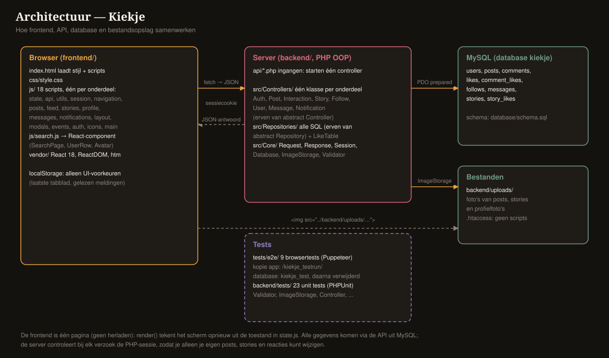
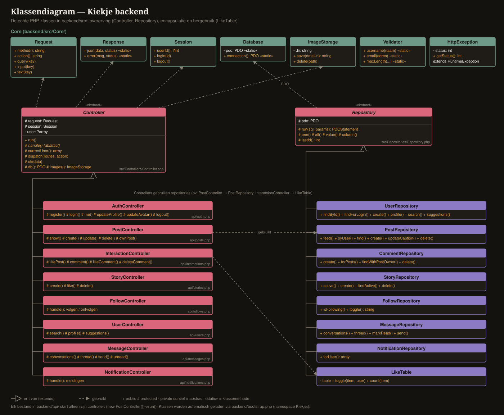
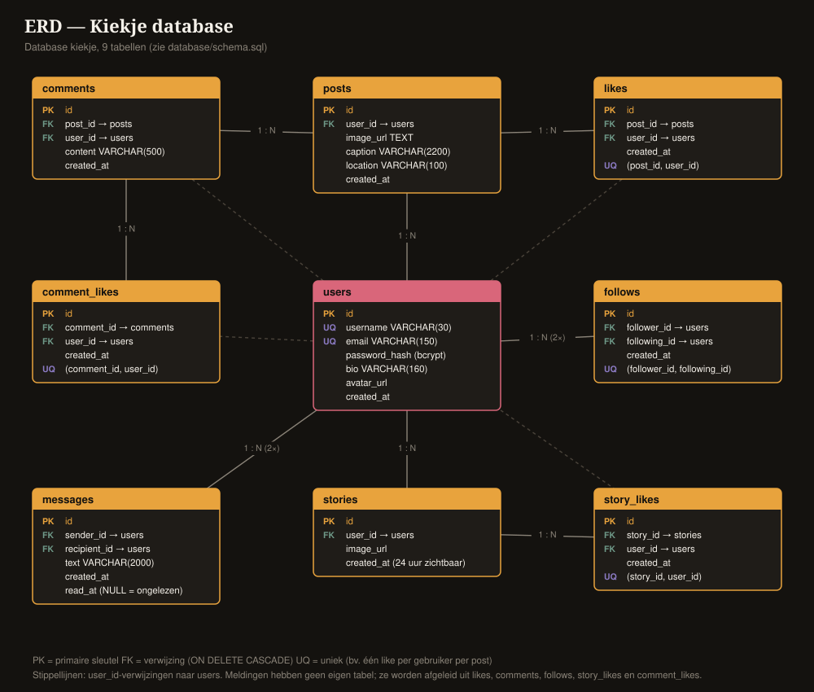
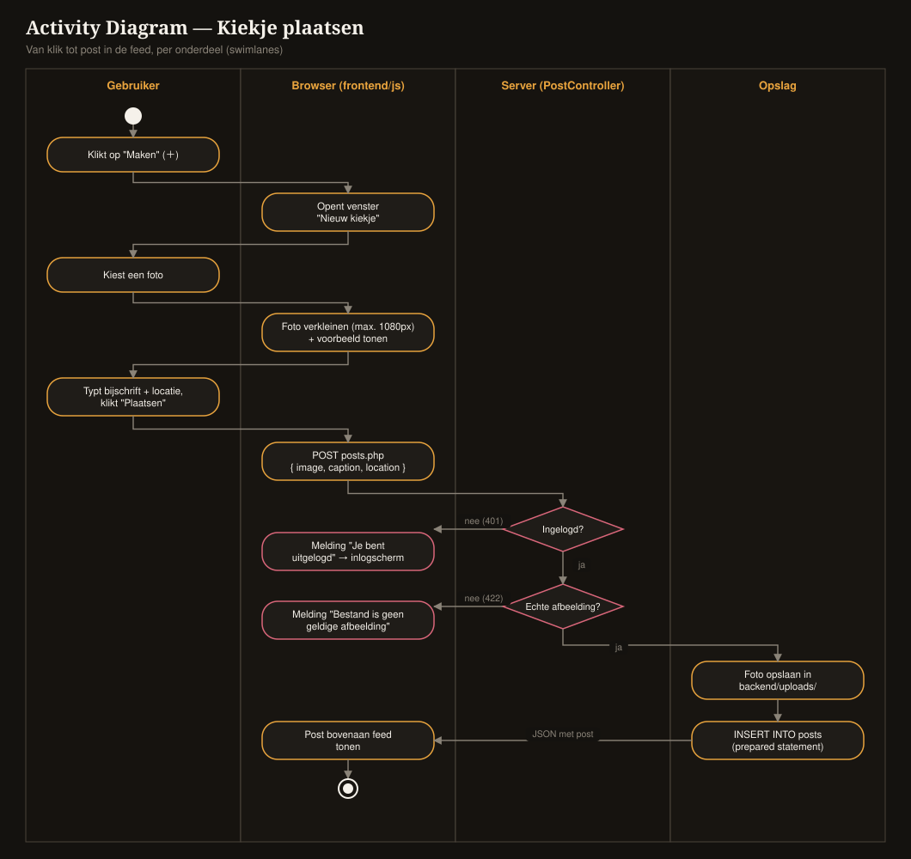
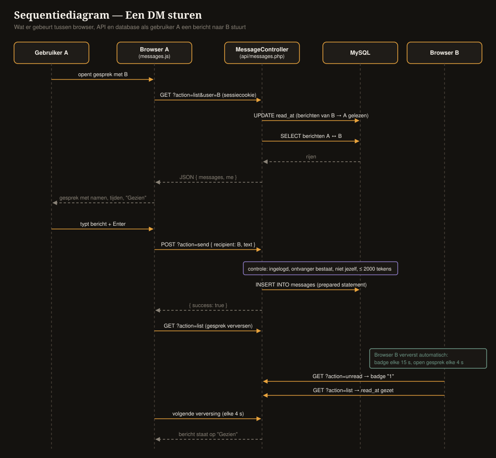
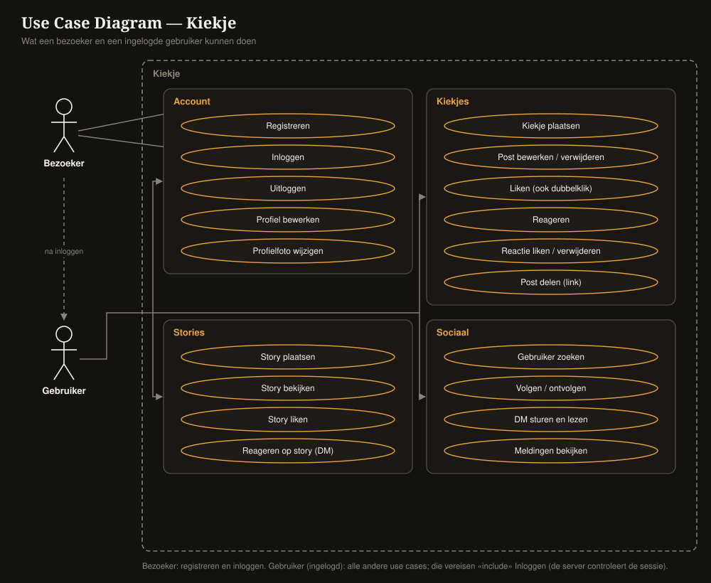

Uitleg van alle code, met plaatjes, een spiekbriefje voor de presentatie
en antwoorden op vragen die de docent kan stellen.
Tip: in de oranje vakjes staat de simpele uitleg, in de groene vakjes staat wat je hardop kunt zeggen.
📸Kiekje is een app zoals Instagram. Je kunt foto's delen met je vrienden. Je kunt foto's leuk vinden, erop reageren, andere mensen volgen en berichtjes sturen.
De app is gemaakt met:
De makkelijkste manier om de app te snappen: stel je een restaurant voor.
| In het restaurant | In Kiekje | Waar in de code? |
|---|---|---|
| 🍽️ De eetzaal: waar jij zit en de menukaart ziet | De frontend: wat je in de browser ziet | frontend/ |
| 🧑🍳 De ober: brengt jouw bestelling naar de keuken en het eten terug | De API: berichtjes tussen browser en server | backend/api/ |
| 👨🍳 De keuken: daar wordt het eten gemaakt en gecontroleerd | De backend: PHP-code op de server | backend/src/ |
| 🧊 De voorraadkast: waar al het eten bewaard wordt | De database (MySQL) | database/schema.sql |
| 📚 Het fotoalbum aan de muur | De map met geüploade foto's | backend/uploads/ |

| Onderdeel | Wat kun je doen? |
|---|---|
| 👤 Account | Registreren, inloggen, uitloggen, naam en bio veranderen |
| 🖼️ Profielfoto | Foto kiezen, inzoomen, verschuiven, draaien. Wie niks kiest krijgt een grijs poppetje. |
| 📷 Posts | Foto plaatsen met tekst en plaats, bewerken, weggooien, link delen |
| ❤️ Liken | Op het hartje klikken, of 2× snel op de foto tikken (dan komt er een groot hartje) |
| 💬 Reacties | Reageren, alle reacties bekijken, reacties liken, reacties weggooien |
| ⭕ Stories | Foto die 24 uur blijft staan, liken, erop reageren via een berichtje |
| ➕ Volgen | Mensen volgen en ontvolgen, zien wie jou volgt, voorgestelde vrienden |
| ✉️ Berichten | Privé-berichtjes sturen (DM's), zien of ze gelezen zijn ("Gezien") |
| 🔔 Meldingen | Zien wie jouw foto leuk vond, reageerde of jou ging volgen |
| 🔍 Zoeken | Andere mensen zoeken terwijl je typt |
| 📱 Telefoon + 💻 computer | Op de telefoon een balk onderin, op de computer een balk links |
Alle code staat in de map C:\xampp\htdocs\kiekje\kiekje\. Dit zijn de laden van de kast:
kiekje/ ├── frontend/ ← de eetzaal: wat je ziet (HTML, CSS, JavaScript, React) │ ├── index.html ← de voordeur: dit bestand open je in de browser │ ├── css/ ← de verf: hoe alles eruitziet │ ├── js/ ← 18 bestanden: wat de knoppen doen │ └── vendor/ ← React (geleende LEGO-doos) ├── backend/ ← de keuken: PHP op de server │ ├── api/ ← de deurtjes waar de ober doorheen loopt │ ├── src/ ← de koks (klassen): Controllers, Repositories, Core │ ├── uploads/ ← het fotoalbum │ └── tests/ ← kleine tests voor de koks ├── database/ ← de tekening van de voorraadkast (schema.sql) ├── tests/e2e/ ← de robot die de hele app uitprobeert ├── diagrams/ ← de tekeningen (ERD, klassendiagram, ...) ├── docs/ ← uitleg (dit document, API, architectuur) └── vue/ ← een los voorbeeldje in Vue
De frontend is alles wat je ziet in de browser. Het is één pagina (index.html).
Als je op een knop drukt, laadt de pagina niet opnieuw: het scherm verandert gewoon. Dat heet een
single-page app.
state.js). Daarin staat: wie ben jij, op welke pagina ben je, welke foto's zijn er.render()). Die kijkt in het geheugen en tekent het hele scherm.state.js): me = wie ben ik, tab = welke pagina, feedPosts = de foto's.render() in layout.js): maakt van het geheugen HTML.events() in events.js): zegt tegen elke knop wat hij moet doen.render() tekent opnieuw.| Bestand | Wat doet het? (simpel) |
|---|---|
state.js | 🧠 Het geheugen van de app |
api.js | 🧑🍳 De ober: één functie api() die alle bestellingen naar de server brengt |
utils.js | 🧰 Gereedschapskist: tijd schrijven ("5 min"), foto's kleiner maken, meldingen laten zien |
session.js | 🔑 Wie is er ingelogd? Klopt dat nog met de server? |
navigation.js | 🚪 Van pagina wisselen en de juiste dingen ophalen |
posts.js | 📷 Liken, reageren, foto plaatsen, bewerken, weggooien |
feed.js | 📰 De tijdlijn tekenen: fotokaartjes, reacties, dubbeltik-hartje |
stories.js | ⭕ De rondjes bovenaan (stories) |
profile.js | 👤 Profiel, volgen, profielfoto met bijsnijden |
messages.js | ✉️ Berichtjes (DM's) |
notifications.js | 🔔 Meldingen |
search.js | 🔍 Zoeken (gemaakt met React) |
auth.js | 🚪 Het inlog- en registratiescherm |
icons.js | 🖍️ De plaatjes van de knoppen (huisje, hartje, belletje) |
layout.js | 🏠 De balken (links, boven, onder) en de tekenaar render() |
modals.js | 🪟 Pop-up-venstertjes (nieuwe foto, bericht, story) |
events.js | 🔌 Sluit alle knoppen aan |
main.js | ▶️ De aan-knop: start de app |
api.js)// breng een bestelling naar de keuken en wacht op het antwoord async function api(path, body) { const res = await fetch(API + path, { ... }); // ober loopt naar de keuken const data = await res.json(); // ober komt terug met het eten if (res.status === 401) syncUser(null); // "u bent geen klant meer" → naar inloggen if (data.error) throw new Error(data.error); // iets mis? vertel het return data; }
fetch = de ober loopt naar de keuken. await = even wachten tot de ober terug is.
401 betekent: "Jij bent niet (meer) ingelogd."esc()? (tegen stoute tekst)Als iemand als reactie <script> typt, zou de browser dat kunnen uitvoeren als code. De functie esc()
maakt er gewone letters van. Zo kan niemand stoute code in de app stoppen. Dit heet XSS voorkomen.
De zoekpagina (frontend/js/search.js) is gebouwd met React.
Avatar = het blokje met een profielfotootjeUserRow = een regeltje met één persoon (foto + naam)SearchPage = de hele zoekpagina, gemaakt van al die blokjesuseState): wat heb je getypt, wie is er gevonden.function SearchPage() {
const [query, setQuery] = useState(''); // geheugentje: wat is er getypt?
const [results, setResults] = useState(null); // geheugentje: wie is er gevonden?
useEffect(() => { // als "query" verandert...
// ... wacht 250 ms en vraag dan de server: wie heet zo?
}, [query]);
return html`<input value=${query} onChange=... /> ...`;
}
SearchPage, UserRow en Avatar.
Met useState onthoudt hij de zoekterm en de resultaten, en met useEffect zoekt hij live mee terwijl je typt."De API is de lijst met dingen die je aan de keuken mag vragen. Elk deurtje is een PHP-bestand in backend/api/:
| Deurtje | Waarvoor? | Voorbeeld-vraag |
|---|---|---|
auth.php | Inloggen, registreren, profiel | "Log mij in" |
posts.php | Foto's | "Geef mij alle foto's" |
interactions.php | Likes en reacties | "Zet een hartje bij foto 12" |
stories.php | Stories | "Welke stories zijn er?" |
follows.php | Volgen | "Ik wil Lisa volgen" |
users.php | Zoeken en profielen | "Wie heet 'tim'?" |
messages.php | Berichtjes | "Stuur 'hoi' naar Noor" |
notifications.php | Meldingen | "Wat is er nieuw voor mij?" |
De ober praat in JSON: dat is een briefje met labeltjes, bijvoorbeeld:
{ "success": true, "liked": true, "like_count": 5 } ← "gelukt, je vindt hem leuk, er zijn nu 5 hartjes"
Gaat er iets mis? Dan geeft de server een foutcode: 401 = niet ingelogd, 403 = dat mag jij niet,
404 = bestaat niet, 422 = verkeerd ingevuld. Alle vragen en antwoorden staan in docs/api.md.
De backend is geschreven in PHP en is objectgeoriënteerd (OOP). Wat betekent dat?
new PostController() = "maak een koekje met de vorm PostController".| Soort | Map | Wat doen ze? (simpel) |
|---|---|---|
| 👨🍳 Controllers | src/Controllers/ | De chef-koks. Ze krijgen de bestelling, controleren of alles klopt en bepalen wat er moet gebeuren. Eén chef per onderdeel (posts, stories, berichten...). |
| 🧊 Repositories | src/Repositories/ | De voorraadbeheerders. Alleen zij mogen in de voorraadkast (database). Ze pakken dingen of zetten dingen terug. |
| 🧰 Core | src/Core/ | Het gereedschap van de keuken: de bestelling lezen (Request), het antwoord sturen (Response), wie is er binnen (Session), foto's opbergen (ImageStorage), controleren (Validator). |
Controller. Zij weet hoe je netjes werkt: fouten opruimen, kijken wie er ingelogd is.PostController, StoryController, enzovoort.
Ze hebben die kunstjes van oma geërfd, dus ze hoeven het niet opnieuw te leren. Dat heet overerving (extends).abstract class Controller { // de oma-kok (je kunt haar zelf niet "bestellen": abstract)
public function run() { ... } // werkt netjes, vangt fouten op
abstract protected function handle(); // "elk kleinkind maakt zijn eigen gerecht"
protected function currentUser() { ... } // wie is er ingelogd?
}
class PostController extends Controller { // kleinkind: erft alles van oma
protected function handle() { ... } // zijn eigen gerecht: foto's
}
| Woord | Simpel | Waar in Kiekje? |
|---|---|---|
| Overerving | Kind erft kunstjes van ouder | 8 controllers erven van Controller, 8 repositories van Repository |
| Abstractie | Een "plan" dat je niet zelf gebruikt, alleen de kinderen | abstract class Controller, abstract handle() |
| Encapsulatie | Een doos met een slot: niet iedereen mag erin | private en protected: alleen de repositories mogen bij de database |
| Polymorfisme | Dezelfde vraag, elk kind doet het op zijn eigen manier | run() roept bij elke controller een andere handle() aan |
Nog een slim ding: LikeTable. Liken werkt bij foto's, reacties én stories precies hetzelfde.
Dus hebben we één klasse gemaakt die we drie keer hergebruiken, in plaats van drie keer dezelfde code te schrijven.
Een deurtje in backend/api/ is heel klein. Het roept alleen de juiste chef-kok:
require __DIR__ . '/../bootstrap.php'; // zet de keuken aan (laadt alle klassen) (new Kiekje\Controllers\PostController())->run(); // "chef-kok van de foto's, aan het werk!"

Controller en Repository.
Acht controllers erven van Controller en regelen elk één onderdeel. De repositories doen alle SQL.
Zo staat elke taak op één plek, en hergebruik ik code, bijvoorbeeld met LikeTable."De database heet kiekje en heeft 9 tabellen. Een tabel is een lijst, zoals een schrift met rijen.
| Tabel | Wat staat erin? |
|---|---|
users | Alle mensen: naam, e-mail, wachtwoord (geheim gemaakt!), bio, profielfoto |
posts | Alle foto's: wie, welke foto, tekst, plaats |
likes | Wie welke foto leuk vindt |
comments | Alle reacties |
comment_likes | Wie welke reactie leuk vindt |
follows | Wie wie volgt |
messages | Alle berichtjes (en of ze gelezen zijn) |
stories | Alle stories (24 uur zichtbaar) |
story_likes | Wie welke story leuk vindt |
ON DELETE CASCADE).Meldingen hebben geen eigen tabel. De app kijkt gewoon in de likes, reacties en volgers en maakt daar de meldingen van. Zo kloppen ze altijd.

posts.php, en de PostController gaat aan het werk.ImageStorage kijkt: is dit echt een foto? (en geen stout programmaatje vermomd als foto). Zo nee: fout 422.uploads/) met een willekeurige naam.PostRepository schrijft in de database: "nieuwe foto van jou".
interactions.php?action=like).LikeTable kijkt: stond er al een hartje? Dan gaat het weg. Zo niet, dan komt het erbij.
| Gevaar | Hoe beschermen we? | Simpel |
|---|---|---|
| Iemand steelt de database met wachtwoorden | Hash & salt met password_hash() (bcrypt) | We bewaren het wachtwoord niet, maar een soep ervan. Van soep kun je de groenten niet meer terugmaken. En elke soep krijgt een eigen snufje zout (salt). |
| SQL-injectie: stoute tekst die de database commando's geeft | Prepared statements (PDO) | We geven de database een invulformulier. Wat jij typt komt altijd in een vakje, en wordt nooit een commando. |
| XSS: stoute code in een reactie | esc() in de frontend, React doet het zelf | Van <script> maken we gewone letters. |
| Iemand past jouw foto aan | Server controleert eigenaarschap (fout 403) | Alleen jij mag aan jouw tekening kleuren. |
| Een vermomd programma als "foto" | ImageStorage kijkt in het bestand zelf, .htaccess blokkeert scripts | We kijken in het cadeautje, niet alleen naar het papiertje. |
| Iemand steelt je armbandje (sessie) | httponly-cookie, nieuw sessie-id bij inloggen | Je armbandje kan niet door stoute code worden gepakt, en je krijgt elke keer een nieuwe. |
| Een andere site doet iets namens jou (CSRF) | SameSite=Lax + account-acties alleen via POST | Je armbandje werkt alleen in ons eigen pretpark. |
| Foutmeldingen verklappen geheimen | Browser krijgt alleen "Serverfout." | We zeggen niet wat er in de keuken misging. |
| Soort test | Hoeveel | Wat test het? | Starten |
|---|---|---|---|
| Browsertests (Puppeteer) | 9 | De hele app, zoals een echte gebruiker klikt | cd tests/e2e → npm test |
| Unit tests (PHPUnit) | 23 | Kleine stukjes van de keuken apart: de controleur, het fotoalbum, de oma-kok | vendor/bin/phpunit |
Belangrijk: de robot speelt in een aparte speeltuin. Hij gebruikt een eigen database (kiekje_test) en een eigen kopie van de app.
Zo komen er nooit test-accounts of test-foto's in de echte app. Na het testen ruimt de robot alles weer op.
Dit heet scheiding tussen test- en live-omgeving.
In de map diagrams/ staan tekeningen van de app. Ze worden gemaakt door genereer-diagrammen.js.
| Tekening | Wat laat het zien? (simpel) |
|---|---|
| ERD | De voorraadkast: alle 9 tabellen en hoe ze vastzitten |
| Klassendiagram | Alle koks (klassen) en wie van wie erft |
| Domeinmodel | De "dingen" in de app (gebruiker, foto, reactie...) zonder code |
| Use case diagram | Wat een bezoeker en een ingelogde gebruiker kunnen doen |
| Activity diagram | De stappen van een foto plaatsen |
| Sequentiediagram | Wie zegt wat tegen wie bij een berichtje |
| Architectuur | Het restaurant: eetzaal, keuken, voorraadkast |
| Sitemap | Alle schermen van de app |
| Wireframes | Een schets van het scherm op telefoon en computer |

Kiekje2026!). Laat zien: de feed → dubbeltik op een foto (groot hartje) →
reacties openen → een story bekijken → een berichtje sturen → meldingen (belletje) → zoeken → je profiel met profielfoto bijsnijden.Controller met acht subklassen, een abstracte Repository met de SQL.
Overerving, abstractie, encapsulatie en hergebruik met LikeTable."| Vraag | Jouw antwoord |
|---|---|
| Waarom sla je het wachtwoord niet gewoon op? | Als de database gestolen wordt, kunnen ze de wachtwoorden niet lezen. Ik sla alleen een hash op (bcrypt) met een salt, zodat twee dezelfde wachtwoorden toch anders zijn. |
| Wat is SQL-injectie en hoe voorkom je het? | Stoute tekst die de database een commando geeft. Ik gebruik prepared statements: de invoer gaat altijd in een apart vakje (?) en wordt nooit uitgevoerd. |
| Wat is het verschil tussen een klasse en een object? | Een klasse is de vorm (bijv. PostController), een object is wat je ermee maakt (new PostController()). |
| Waar zie je overerving? | class PostController extends Controller. Alle 8 controllers erven run() en currentUser() van Controller. |
| Waarom is Controller abstract? | Je gebruikt hem nooit los; hij is een basis. Elke subklasse moet zelf handle() maken. |
| Wat doet een Repository? | Daar staat alle SQL. Zo schrijft een controller zelf geen SQL, en staat alles over de database op één plek. |
| Waar gebruik je React? | De zoekpagina: componenten SearchPage, UserRow, Avatar, met useState en useEffect. |
| Hoe weet de server wie je bent? | Na inloggen krijg je een sessie-cookie. PHP onthoudt bij die sessie jouw gebruikers-id. |
| Wat gebeurt er als ik andermans foto probeer te verwijderen? | De server controleert of de foto van jou is. Zo niet: fout 403 "Dit is niet jouw post." |
| Hoe test je? | 9 browsertests met Puppeteer (de hele app) en 23 unit tests met PHPUnit (losse klassen). Ze draaien in een aparte testdatabase. |
| Waarom hebben meldingen geen tabel? | Ze worden afgeleid uit likes, reacties en volgers. Zo kunnen ze nooit verkeerd zijn: haalt iemand zijn like weg, dan verdwijnt de melding ook. |
| Wat zou je nog verbeteren? | Een knop om je account te verwijderen (AVG), een limiet op inlogpogingen, en locatiegegevens (EXIF) uit foto's halen op de server. |
| Woord | Heel simpel |
|---|---|
| Frontend | Wat je ziet (de eetzaal) |
| Backend | Wat op de server gebeurt (de keuken) |
| API | De ober: de afspraken hoe browser en server praten |
| JSON | Een briefje met labeltjes waarin de ober praat |
| Database | De voorraadkast waar alles bewaard wordt |
| Tabel | Een lijst in de database, zoals een schrift met rijen |
| id / sleutel | Het rugnummer van een ding |
| Klasse | De koekjesvorm |
| Object | Het koekje |
| Overerving | Een kind erft kunstjes van zijn ouder |
| Abstract | Een plan dat alleen de kinderen echt gebruiken |
| Encapsulatie | Een doos met een slot |
| Component (React) | Een LEGO-blokje |
| State (useState) | Het geheugentje van een blokje |
| render() | De tekenaar die het scherm maakt |
| Sessie / cookie | Het armbandje in het pretpark |
| Hash | Soep van je wachtwoord: niet meer terug te maken |
| Salt | Een snufje zout, anders bij elk wachtwoord |
| Prepared statement | Een invulformulier voor de database |
| Unit test | Eén klein stukje apart testen |
| End-to-end test | De robot die de hele app uitprobeert |
| Single-page app | Eén pagina die van inhoud wisselt zonder opnieuw te laden |
Meer details: README.md, docs/architectuur.md, docs/api.md, backend/README.md en docs/documentatie.md. Succes met je presentatie! 🍀